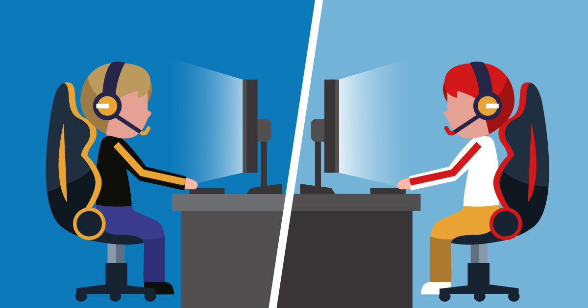
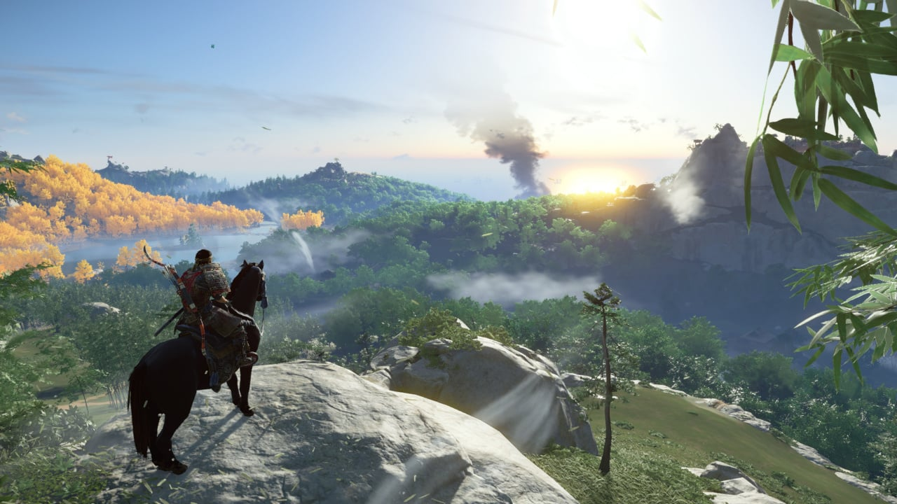

There are many types of video games, each having it's own playstyle. I will show you the difference between them and what each kind consists of.
Online games can be played by with other players. These games usually require an internet connection when playing with others. There are different types of online games. The grand majority of these games fall under a category.

Story games are usually made for one player to play at a time. These games don't require a constant connection to the internet and can be played offline. These games allow the player to play the game as if they were the character themselves. Most of these games allow the player to explore the world in which they can do various activities or favors for other characters. Story games tell the characters story through a variety of missions that the player has to play through.

Open world games allow the player to fully explore the world, without a clear objective or purpose. The constant joy of finding something new or cool causes the player to explore more in hopes of finding something else. Most of these games don't explain how to play it, making it challenging to for the inexperienced. When the player gets to a certain point of these games, they will develop the skills or items necassary to do anything in the game, like my maybe defeating a boss or building a structure.
Exclusive games are only sold to be playesd on a specific console. The other consoles cannot play these games. The majority of the time, these games are what are known as Triple A games, meaning they are made by a large company that make bigger, more ambitious games. These exclusives become staples of that console, casuing players to buy a specific console just to play those games.
New games are always being made, these are sure to make players excited to play them soon.